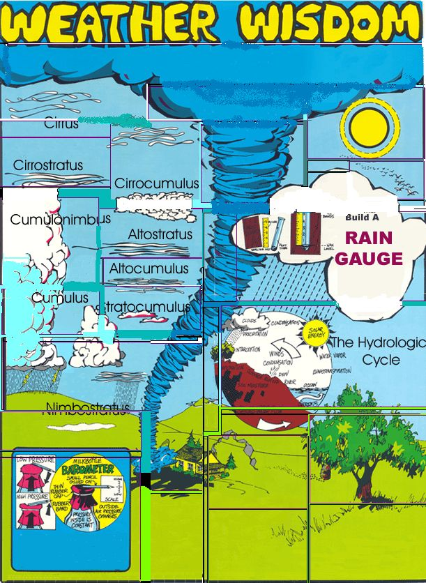

TORNADOES can strike - and have struck - communities in every section of the continental United States and in many areas of Canada and the rest of the world. These mose violent storms of nature do, however, occur more frequently in the central section of the U.S. and during the months of april, May and June.
Twisters are most likely to form on a hot, sticky day between 3 and 7 p.m. An hour or two before this happens, the up-to-that-time familiar thunderstorm clouds may begin to have a peculiar greenish hue and bulge down instead of up. Heavy rains and then hail often precede the actual tornado.
These gigantic whirlwinds almost always march across the countryside from southwest to northeast at about 30 miles per hour and this predictability can save your life.
Take shelter, if at all possible, in the southwest corner of a basement, storm cellar, cave or excavation. In town - when no such shelter is available - huddle under heavy furniture or in an interior doorway of a steel-framed or reinforced-concrete building. Stay away from windows, although it is a good idea to leave a few of them open.
If you spot tornado out in the open, move away from its path at a right angle. When there's no time for such evasion, immediately flattern out in the nearest ditch or depression.
HALOS around the sun or moon signal the approach of a warm front anf the possibility of a warm front and the possibility of slow, steady precipitation.
CIRRUS: Very wispy, feathery clouds which form at great heights. Due to this altitude, cirrus are the first clouds to color before sunrise and the last to darken at sunset.
CIRROSTRATUS: Veil the sky with the thin, overall whitish haze which produces a halo around the sun or moon. Cirrostratus clouds with wispy, defined edges are often called "mares tails".
CIRROCUMULUS: Resemble cirrus clouds but are sort of tufted or rippled like sand on a beach. Cirrocumulus are clouds of the "mackerel sky".
ALTOSTRATUS: Similar to cirrostratus, but more dense. This denseness causes the soft-edged corona around the sun or moon.
BIRDS fly higher during high pressure (fair sky) weather and lower prior to a storm.
The heart of this do-it-yourself rain gauge is one of those plastic "test tubes" in which some brands of toothbrushes are packaged. Or an extra-tall vial. Or any discarded pipe-like container with a diameter of at least three-quarters inch and a length of six inches of more.
If the closed end of your tube is rounded, tamp in some clay, candle wax or paraffin to make a flat bottom, then mount the container on a support board next to an old section ruler or yardstick. Use brackets made of short lengths of wire or narrow bands cut from a tin can and secured with small nails (brads) for this mounting operation.The vial should slide out easily so you can dump it after every rain.
Take care to see that the flat bottom of your tube is level with the zero in its neighboring scale and make sure that the open top of the container is even with - or just a little higher than - the top of its supporting board. Then attach the completed gauge to a fence post out in an open area away from trees, buildings or other obstructions and "let 'er rain."
THE HYDROLOGIC CYCLE: When we want a glass of water, we turn on the kitchen tap quite casually. So casually that we seldom realize our faucet is only one small link in a system that constantly circulated and recirculates precipitation, condensation and evaporated moisture across the face of the earth.
CUMULONIMBUS: With flattened and horizontal bases and tops that pile up to great heights, these "thunderheads" are a fairly sure sign of rain, thunder and lightning. Because of their height, the tops of cumulonimbus clouds can be seen from many miles away... long before their bases are visible.
ALTOCUMULUS: One form of altocumulus, called "sheep backs", looks like a layer of cotton balls and a second form has the appearance of long rolls or bands of cotton bunched together. The regular, parallel bands of the second form are easily distinguished from the "mackerel sky" cirrocumulus.
STRATOCUMULUS: These long, flattened puffs are good little cumulus clouds turn into by the end of the day.
CUMULUS: The beautiful, fluffy white puffs that scatter over a fair weather sky.
NIMBOSTRATUS: Ragged scud or rain clouds which form beneath altostratus and lower as the rain begins.
STRATUS: Very low, horizontal, layer clouds that seem dense and thick. Undersides are frequently greyish. If these forms are broken into fragments or shreds, they're called fractostratus.
FOG forms for several reasons that all - generally - can be defined as "cool or cold ground or water under warmer air". Fog is usually dissipated by the sun and the wind but, occasionally, rises to become a low stratus cloud.
Barometers sound horribly complicated but they're really very simple devices for measuring the pressure of the air around us. If you can find an old glass milk bottle or similar container, a section of rubber balloon, a rubber band and a pencil, you can make an elementary barometer of your own in just a few minutes.
A rising barometer and high readings signal clear and pleasant weather while falling and low readings forecast gathering skies, rain, snow or other inclement conditions.
INSECTS swarm and seem more anoying during the drop in pressure that preceeds rain or storm. Bees stay closer to their hives. Smoke rises slowly, if at all... and may even droop. Ants get unusually busy and scurry about, moving their eggs from place to place. Sound travels further during a low and smells seem much stronger as the lesser atmospheric pressure allows the earth to release more of its odors. Animals become restless, uneasy, more active and noisy.
Conversely, when atmospheric pressure rises - particularly if the increase is the result of a great polar continental high out of Canada - the stale smell in swamps and ditches will diminish, giving the air a fresh (almost neutral) smell. Smoke rises straight up to great heights. Fish become more active and swim nearer the surface (it's a good time to go angling.) During the winter, the ice on frozen ponds and lakes will begin to crack and boom during periods of rising pressure. People seem happier and friendlier.
LEAVES grow on a tree the way they do, to a certain extent, in response to pressure exerted by prevailing winds (which usually blow, in the United States, from the west-southwest). As a storm center approaches a region, however, the counter-clockwise circulation of air around the moving low pressure area changes those prevailing westerly breezes to southerly winds... which blow trees "the wrong way" and sometimes cause their leaves to curl up and show their undersides. When old-timers say they can look at a tree's foliage and see a storm approaching, they're not joshing.
|
 |
|
|